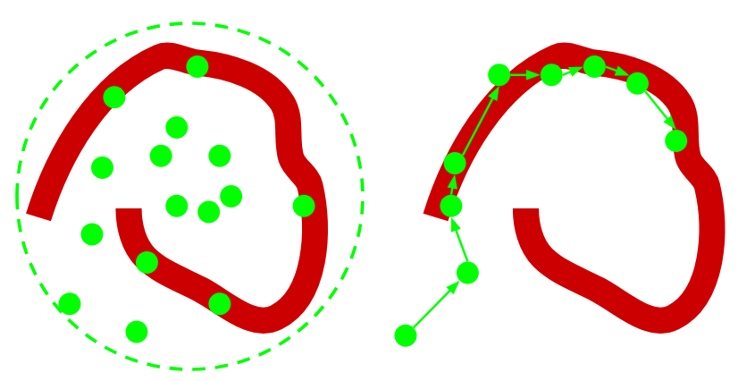

%matplotlib notebook
import matplotlib.pyplot as plt
import numpy as np
import scipy
import pandas as pd
from ipywidgets import interact, FloatSlider, SelectionSlider, IntSlider
import theano.tensor as T
import pymc3 as pm
print('Running PyMC3 v{}'.format(pm.__version__))
8. Markov Chain Monte Carlo¶
References for today’s lecture:
Davidson-Pilon, “Bayesian methods for hackers”, Addison Wesley, 2016, Chapter 2 and 3
8.1. Recap: The Bayesian setting¶
Reminder from previous classes:
Probability: Represents how believable an event is
How confident we are that the event occurs
Our belief of a certain event \(A\) is the prior probability \(p(A)\)
We collect evidence \(X\) to update our belief on \(A\) forming a posterior \(p(A|X)\)
How? Bayes Theorem
In general the larger the amount of evidence the less influence the prior has
Model/parameter estimation:
Maximum likelihood (MLE): Point estimate
Maximum a posterior (MAP): Point estimate plus prior
Bayes: Full posterior distribution
One more time: Bayes Theorem + law of total probability: $\( p(A|X) = \frac{p(X|A)p(A)}{p(X)} = \frac{p(X|A)p(A)}{\int p(X, A) dA} = \frac{p(X|A)p(A)}{\int p(X|A)p(A) dA} \)$
We propose the prior and a likelihood: Our assumptions on the data and parameter distributions
The evidence is … usually intractable
We are integrating on all the possible values of the parameters, remember GMM?
Are we done? What are our options?
Use priors/likelihoods so that posterior is analytical (conjugate)
Approximate inference (Variational Bayes)
Today: Monte-Carlo Markov Chain (MCMC)
8.1.1. The Bayesian landscape¶
In the following example we draw two-dimensional Poisson distributed data
We consider exponential priors for the rate \(\lambda\)
This is essentially a two dimensional surface in parameter space
The prior sets the initial shape
The observations warp the surface
To find the best parameters we need to explore this possibly high-dim space
fig, ax = plt.subplots(1, 2, figsize=(7, 4), tight_layout=True)
def update_plot(rseed, N):
np.random.seed(rseed); ax[0].cla(); ax[1].cla();
lambda_1_true = 1; lambda_2_true = 3
data = np.concatenate([scipy.stats.poisson.rvs(lambda_1_true, size=(N, 1)),
scipy.stats.poisson.rvs(lambda_2_true, size=(N, 1))
], axis=1)
x = y = np.linspace(.01, 5, 100)
likelihood_x = np.array([scipy.stats.poisson.pmf(data[:, 0], _x)
for _x in x]).prod(axis=1)
likelihood_y = np.array([scipy.stats.poisson.pmf(data[:, 1], _y)
for _y in y]).prod(axis=1)
L = np.dot(likelihood_x[:, None], likelihood_y[None, :])
exp_x = scipy.stats.expon.pdf(x, loc=0, scale=3)
exp_y = scipy.stats.expon.pdf(x, loc=0, scale=10)
M = np.dot(exp_x[:, None], exp_y[None, :])
im = ax[0].imshow(M, interpolation='none', origin='lower',
cmap=plt.cm.jet, extent=(0, 5, 0, 5))
ax[0].scatter(lambda_2_true, lambda_1_true, c="k", s=50, edgecolor="none")
ax[0].set_xlim(0, 5); ax[0].set_ylim(0, 5)
ax[0].set_title("Prior Landscape")
im = ax[1].imshow(M * L, interpolation='none', origin='lower',
cmap=plt.cm.jet, extent=(0, 5, 0, 5))
ax[1].scatter(lambda_2_true, lambda_1_true, c="k", s=50, edgecolor="none")
ax[1].set_title("Landscape warped \nby %d data observation." % N)
ax[1].set_xlim(0, 5); ax[1].set_ylim(0, 5);
interact(update_plot,
N=SelectionSlider(options=[1, 10, 100]),
rseed=IntSlider(min=0, max=100));
8.2. Monte Carlo methods¶
Monte carlo methods obtain numerical results via repeated random sampling
One of its most important case uses is: Monte-carlo integration
Let’s say we want to the expected value of a function \(g\) on a random variable \(X \sim f\)
The Monte Carlo estimator of this integral is
and due to the CLT we have
We could use this to estimate very hard integrals (posteriors)
Example: Estimating the value of PI using Monte Carlo
We throw random “balls” into the unitary square and we count how many fall inside the circle
If we divide the area of the circle and the square we get \(\pi\)
def func(x, y):
return (x-0)**2 + (y-0)**2 -1. <= 0.
x = np.linspace(0, 1, num=1000);
X, Y = np.meshgrid(x, x)
fig, ax = plt.subplots(figsize=(5, 3), tight_layout=True)
def update(N, rseed):
np.random.seed(rseed);
ax.cla(); ax.contourf(X, Y, func(X, Y), cmap=plt.cm.Reds);
ax.set_aspect('equal')
xr = np.random.rand(N, 2)
ax.scatter(xr[:, 0], xr[:, 1], s=1, c='k', alpha=1)
N_inside = len(np.where(func(xr[:, 0], xr[:, 1]))[0])
print("%0.4f" %(4.*N_inside/N))
interact(update,
N=SelectionSlider(options=[1, 10, 100, 1000, 10000, 100000]),
rseed=IntSlider(min=0, max=100));
N = np.array([1, 10, 100, 1_000, 10_000, 100_000, 1_000_000])
N_inside = np.zeros_like(N)
for i, N_ in enumerate(N):
xr = np.random.rand(N_, 2)
N_inside[i] = len(np.where(func(xr[:, 0], xr[:, 1]))[0])
fig, ax = plt.subplots()
ax.plot(N, 4*N_inside/N)
ax.set_xscale('log')
ax.axhline(np.pi, c='r', ls='--')
8.3. Markov Chain¶
Consider a system, i.e. a set of states \(X\) that evolve in time (steps)
A system can be modeled with a Markov Chain: stochastic process for sequences
Given that it fits the Markov property
i.e the probability of the future state is conditionally independant of the past given the present
Markov chains that are irreducible will converge in the long term to a stationary distribution
8.4. Markov Chain Monte Carlo (MCMC)¶
The problem with MC integration is that sometimes we can’t draw from distribution \(f\). Also randomly sampling in all the space is very inefficient
Instead we could use Markov Chain Monte Carlo, a family of algorithms that learn the transition probabilities of a markov chain so that it converges to a desired distribution
In our case the desired distribution is the bayesian posterior
{kind=link}
MCMC searches the space in a less naive way. A sequence of samples is called a trace
Random walk with a generated step ¿How to select the step?
There are several proposal algoritms two of the most popular ones are:
8.4.1. Metropolis Hastings (MH)¶
Random walker that moves on all dimensions simultaneously
A candidate step is drawn from an arbitrary but symmetric distribution \(x^{new} \sim g(x^{new}|x_t)\)
We accept the step if \(f(x^{new})/f(x^t)\) is equal or larger than a certain threshold
\(f(\cdot)\) needs only to be proportional to the target distribution (evidence is canceled in the ratio)
Repeat many times until convergence
8.4.2. Hamiltonian Monte-Carlo¶
Family of step proposing methods that use momentum (derivatives)
Only for continuous variables
Cost more than MH (single iteration) but require less iterations
http://arogozhnikov.github.io/2016/12/19/markov_chain_monte_carlo.html
8.5. Probabilistic programming¶
PP: Doing statistics (Bayesian inference) using the tools of computer science
PP languages: unify general purpose programming with probabilistic modeling
Python friendly PP frameworks/libraries:
PyMC3: Black-box VI, MH, Gibbs, NUTS sampler. Uses theano
PyStan: Python interface for Stan platform
Edward: Black-box VI, neural networks. Uses tensorflow
Pyro: Black-box VI, neural networks, MCMC. Uses pytorch
emcee: Pure python implementation of the Affine invariant MCMC ensemble sampler
http://mattpitkin.github.io/samplers-demo/pages/samplers-samplers-everywhere/
PP runs in two directions!
8.6. A PyMC3 tutorial¶
In this tutorial we will review how to do
Model definition
Fitting
Convergence checks
Posterior analysis
with PyMC3
We start with an example of Bayesian linear regression (class 2)
Gaussian noise with variance \(\sigma^2\)
One independent variables: \(X\)
Three parameters \(\beta\): intercept plus one coefficient per covariate
Credit: https://docs.pymc.io/notebooks/getting_started.html
np.random.seed(0)
beta_true, sigma_true, N = [1, 2.5], 1., 30
X = np.random.randn(N)
Y = beta_true[0] + beta_true[1]*X + np.random.randn(N)*sigma_true
fig, ax = plt.subplots(figsize=(7, 4))
ax.scatter(X, Y)
ax.set_xlabel('X'); ax.set_ylabel('Y');
8.6.1. Model specification¶
Using the
withkeyword we create a context frompm.Model()Within this context we will set priors, likelihood, etc
with pm.Model() as my_model:
# Priors
beta = pm.Normal(name='beta', mu=0, sd=10, shape=2)
sigma = pm.HalfNormal('sigma', sd=1, testval=np.std(Y))
8.6.1.1. Creating random variables¶
We have set two stochastic variables with normal and half normal distributions, respectively
These are the priors for \(\beta\) and \(\sigma\)
For \(\beta\) we used a normal prior. The constructor for normal is
pm.Normal(name='beta', mu=0, sd=10, shape=3, testval=None)
where
name(string): Unique identifier, in this case ‘beta’mu and sd (floats): Mean and standard deviation of the normal distribution in this case 0 and 10, respectively
shape: Specifies the dimensionality, in this case we create 3 univariate normalstestval: Gives initial values
For \(\sigma\) we use a half-normal prior
This variable is non-negative so we have to use a non-negative prior (e.g. Gamma) or a bounded prior
8.6.1.2. Bounded distributions¶
One can create arbitrary bounded distributions with
x = pm.Bound(pm.Normal, lower=0.0)('x', mu=1.0, sd=3.0)
8.6.1.4. Specifying the likelihood¶
Now we can specify the likelihood of the model
First, to continue working in the previously defined context we use
with my_model:
with my_model:
X_shared = pm.Data('x', X)
# Likelihood
mu = pm.Deterministic('mu', beta[0] + beta[1]*X_shared)
Y_obs = pm.Normal('Y_obs', mu=mu, sd=sigma, observed=Y)
The likelihood is a random variable with the keyword observed defined
In
observedwe pass the data. It can be a numpy ndarray or a pandas data frame
By giving beta and sigma as parameter for Y_obs we automatically create a parent-child relation
The following attributes have been created
print(my_model.free_RVs)
print(my_model.deterministics)
print(my_model.observed_RVs)
my_model
8.6.2. Model fitting¶
In PyMC3 we can do MAP to get point estimates, VI to do approximate inference and MCMC for posterior sampling
MAP and VI follow an optimization approach.
They are generally faster than MCMC but return less information
point estimate with no uncertainty
approximate factorized distribution (only continuous variables)
MAP and VI can be used to find reasonable initial states for MCMC
For very complex model and large number of observations we may not be able to do MCMC at all
MAP estimate
with my_model:
map_estimate = pm.find_MAP(progressbar=True)
map_estimate
8.6.3. MCMC sampling¶
To do MCMC first you have to specify a step method (MH, Gibbs, NUTS, etc)
PyMC3 have very good default options
No-U-Turn sampler is the default option for continuous parameters
MH is the default for discrete parameters
pm.sampleis the main MCMC interface
sample(draws=500,
step=None,
init='auto',
n_init=200000,
start=None,
trace=None,
chains=None,
cores=None,
tune=500,
...)
with my_model:
# draw 500 posterior samples
# trace = pm.sample(draws=2000, start=map_estimate) # Start from MAP
trace = pm.sample(draws=2000, init='advi') # Start from VI
8.6.3.1. Check posteriors with traceplots¶
pm.traceplot(trace, figsize=(7, 3), var_names=['beta', 'sigma'], combined=True);
pm.plot_posterior(trace, var_names=['beta', 'sigma'], figsize=(7, 2), textsize=12);
# Transform trace to dataframe
df_trace = pm.trace_to_dataframe(trace)[['beta__0', 'beta__1', 'sigma']]
pd.plotting.scatter_matrix(df_trace, diagonal='kde', figsize=(6, 4))
plt.tight_layout()
8.6.3.2. Use diagnostics to check the convergence of the chains¶
pm.summary(trace).round(2)
The Gelman-Rubin diagnostic tests for lack of convergence
Compares the variance between multiple chains to the variance within each chain.
Values greater than one indicate that one or more chains have not yet converged.
8.6.3.3. Draw posterior predictive distribution¶
In practice, for a regressor, we want the posterior predictive distribution, i.e. the prediction y for a new sample x given the training dataset
x_test = np.linspace(np.amin(X), np.amax(X), num=1000)
with my_model:
pm.set_data({"x": x_test})
posterior_predictive = pm.sample_posterior_predictive(trace, samples=50,
var_names=["mu", "Y_obs"])
fig, ax = plt.subplots(figsize=(6, 3), tight_layout=True)
ax.set_xlabel('X'); ax.set_ylabel('Y');
for line in posterior_predictive["mu"]:
ax.plot(x_test, line)
fig, ax = plt.subplots(figsize=(6, 3), tight_layout=True)
ax.set_xlabel('X'); ax.set_ylabel('Y');
mean = np.mean(posterior_predictive["mu"], axis=0)
perc = np.percentile(posterior_predictive["mu"], q=(5, 95), axis=0)
ax.plot(x_test, mean)
ax.fill_between(x_test, perc[1], perc[0], alpha=0.5)
ax.scatter(X, Y, c='k')
ax.set_xlabel('X'); ax.set_ylabel('Y');
8.7. Second example: Mixture of Gaussians¶
In this example we will try to infer the parameters of a mixture of two 1d Gaussians
Let’s cerate some data
mu_true = [-1, 2]
std_true = [2, 0.75]
p_true, N = 0.4, 200
p = np.array([p_true, 1-p_true])
np.random.seed(0)
data = np.concatenate((scipy.stats.norm(loc=mu_true[0], scale=std_true[0]).rvs(size=int(p[0]*N)),
scipy.stats.norm(loc=mu_true[1], scale=std_true[1]).rvs(size=int(p[1]*N))))
fig, ax = plt.subplots(figsize=(9, 3))
ax.hist(data, bins=20, alpha=0.8, density=True);
x_plot = np.linspace(np.amin(data), np.amax(data), num=1000)
for k in range(2):
ax.plot(x_plot, p[k]*np.exp(-0.5*(x_plot - mu_true[k])**2/std_true[k]**2)/(np.sqrt(2.*np.pi)*std_true[k]), 'k--')
Model specification
We create priors for the center, dispersion and weights of the Gaussians
Ref: https://docs.pymc.io/notebooks/gaussian_mixture_model.html
with pm.Model() as model:
# Prior on concentration
p = pm.Dirichlet('p', a=np.array([0.1, 0.1]), shape=2)
# Use this to avoid singularities (empty clusters)
p_min_potential = pm.Potential('p_min_potential',
T.switch(T.min(p) < .1, -np.inf, 0))
z = pm.Categorical("z", p, shape=data.shape[0])
# Prior on standard deviations
sds = pm.Uniform("sds", lower=0, upper=100, shape=2)
# Prior on means
centers = pm.Normal("centers",
mu=np.array([-1, 1]),
sd=np.array([10, 10]),
shape=2)
# Use this to avoid identifiability problems
order_means_potential = pm.Potential('order_means_potential',
T.switch(centers[1]-centers[0] < 0, -np.inf, 0))
center_i = pm.Deterministic('center_i', centers[z])
sd_i = pm.Deterministic('sd_i', sds[z])
# Likelihood
observations = pm.Normal("obs", mu=center_i, sd=sd_i, observed=data)
Deterministic variables allow us to track custom variables in the traces
pm.Deterministic('name', var)
Potentials allow us to add an arbitrary factor the the likelihood
pm.Potential('name', var)
In this case we add potentials to
Penalize solutions with empty clusters
Forcing that the “first” gaussian is always to the left (remember z flipping)
MCMC
We can use different step functions for different parameters
with model:
step1 = pm.Metropolis(vars=[p, sds, centers])
step2 = pm.CategoricalGibbsMetropolis(vars=[z])
trace = pm.sample(draws=4000, step=[step1, step2], tune=1000, chains=2, cores=2)
step: In this case we have specified the step functions for each variableBurn-in period
tune: N first steps of the chain are discarded from the trace to build posteriors from the converged zonechains: We can also specify the amount of chains and cores
pm.traceplot(trace, figsize=(9, 6), combined=True, varnames=['p', 'centers', 'sds']);
pm.summary(trace, var_names=['centers', 'sds', 'p']).round(3)
pm.plots.autocorrplot(trace, figsize=(7, 4), varnames=['centers', 'sds', 'p']);
A chain that is exploring the space well will exhibit very high autocorrelation.
Low autocorrelation is a sufficient condition for converged MCMC
8.7.1. Posterior predictive checks (PPC)¶
Another way to validate a model is to generate data from the posterior draws and compare with the original distribution
This is done with pm.sample_posterior_predictive
ppc = pm.sample_posterior_predictive(samples=1000, trace=trace, model=model)
x_plot = np.linspace(np.amin(data), np.amax(data), num=1000)
from sklearn.neighbors.kde import KernelDensity
fig, ax = plt.subplots(figsize=(9, 3))
ax.hist(data, bins=20, alpha=0.8, density=True);
mean_score = 0.0
for i in range(100):
kde = KernelDensity(kernel='gaussian', bandwidth=0.5).fit(ppc['obs'][i, :].reshape(-1, 1))
score = np.exp(kde.score_samples(x_plot.reshape(-1, 1)))
mean_score += score
ax.plot(x_plot, score, 'k', alpha=0.05)
ax.plot(x_plot, mean_score/100, 'k', lw=4)
8.7.2. Useful tips for MCMC¶
Intelligent starting values
Choose your priors well!
8.7.2.1. Last example: Multilabel logistic (softmax) regression¶
!wget -nc http://archive.ics.uci.edu/ml/machine-learning-databases/iris/iris.data
from sklearn import datasets
from sklearn.model_selection import StratifiedShuffleSplit
iris = datasets.load_iris()
data = iris.data
label = iris.target
# Create train and test index
sss = StratifiedShuffleSplit(n_splits=1, test_size=0.3)
train_idx, test_idx = next(sss.split(data, label))
with pm.Model() as logreg:
data_shared = pm.Data('X', data[train_idx, :])
# Priors
alpha = pm.Normal(name='alpha', mu=0, sd=10, shape=(3, ))
beta = pm.Normal(name='beta', mu=0, sd=10, shape=(4, 3))
p = T.nnet.softmax(data_shared.dot(beta) + alpha)
label_obs = pm.Categorical('labels_obs', p=p, observed=label[train_idx])
In this case we will try ADVI to get a starting point
Automatic differentiation Variational inference (ADVI)
Select ‘advi’ or ‘fullrank_advi’ as method to fit the model
Choose number of iterations
Get a trace from the fitted model
Study the convergence of the objective function and traced parameters
Inspect traces and posteriors with diagnostic plot
with logreg:
inference = pm.ADVI()
#inference = pm.FullRankADVI()
approx = pm.fit(method=inference, n=30000,
obj_optimizer=pm.adam(learning_rate=0.001))
advi_trace = approx.sample(draws=5000)
8.7.2.2. Evolution of the cost function (ELBO)¶
fig, ax = plt.subplots(figsize=(8, 4))
ax.plot(approx.hist, alpha=.3); ax.set_yscale('log')
8.7.2.3. Accuracy on train and test¶
train_probs = approx.sample_node(p)
test_probs = approx.sample_node(p, more_replacements={data_shared: data[test_idx, :]})
test_acc, train_acc = [], []
for i in range(10):
test_acc.append(np.mean(test_probs.argmax(-1).eval() == label[test_idx]))
train_acc.append(np.mean(train_probs.argmax(-1).eval() == label[train_idx]))
train_acc = np.array(train_acc)
test_acc = np.array(test_acc)
print("Train: %f %f" % (np.mean(train_acc), np.std(train_acc)))
print("Test: %f %f" % (np.mean(test_acc), np.std(test_acc)))
8.7.2.4. Compute 100 samples for the test set predictions¶
test_predictions = approx.sample_node(p, more_replacements={data_shared: data[test_idx, :]}, size=100).eval()
display(test_predictions.shape)
p_mean = np.mean(test_predictions, axis=0)
p_std = np.std(test_predictions, axis=0)
8.7.2.5. Check predictions and uncertainty¶
from sklearn.decomposition import PCA
pca = PCA(n_components=2).fit(data)
data_reduced = pca.transform(data[test_idx, :])
fig, ax = plt.subplots(3, 2, figsize=(5, 6), sharex=True, sharey=True, tight_layout=True)
for i in range(3):
for k, marker in enumerate(['x', 'o', 'd']):
ax[i, 0].scatter(data_reduced[label[test_idx]==k, 0], data_reduced[label[test_idx]==k, 1],
c=p_mean[label[test_idx]==k, i], marker=marker,
cmap=plt.cm.Blues, vmin=0, vmax=1);
ax[i, 1].scatter(data_reduced[label[test_idx]==k, 0], data_reduced[label[test_idx]==k, 1],
c=p_std[label[test_idx]==k, i], marker=marker,
cmap=plt.cm.Blues, vmin=0,
vmax=np.amax(p_std[label[test_idx]==k, i]));
ax[i, 0].set_ylabel(labels[i])
ax[0, 0].set_title('mean p')
ax[0, 1].set_title('std p')
8.7.2.6. Approximate posteriors for the parameters¶
df_trace = pm.trace_to_dataframe(advi_trace)
pd.plotting.scatter_matrix(df_trace, diagonal='kde', figsize=(9, 8));